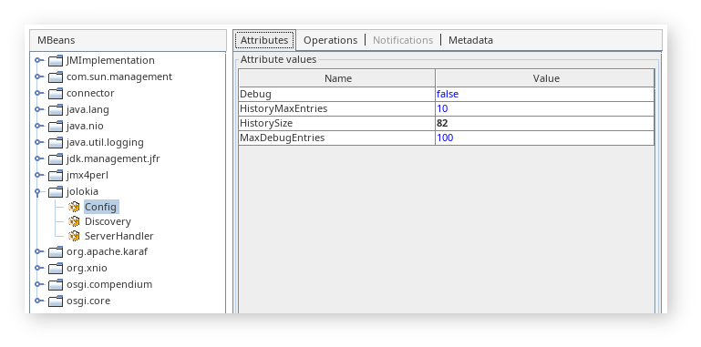

<dependency>
<groupId>org.jolokia</groupId>
<artifactId>jolokia-agent-jvm</artifactId>
<version>2.1.2</version>
</dependency>Migration to 2.x
Jolokia 2.0 should be fully backward-compatible with versions 1.x at protocol level. This means that old jolokia.js library should work with Jolokia 2 as well.
This is true also from Jolokia Java client perspective and processing of JSON messages sent over HTTP.
However there are other aspects that need to be considered when moving from Jolokia 1 to Jolokia 2.
Servlet API compatibility
org.jolokia.server.core.http.AgentServlet which is part of org.jolokia:jolokia-server-core library is now implementing Servlet API 5 from Jakarta EE 9 specification. In fact it should be compatible with any newer Jakarta EE specification (e.g., 10) and Servlet API (e.g., 6).
This concerns also the derived org.jolokia.server.core.osgi.OsgiAgentServlet from org.jolokia:jolokia-agent-osgi which now works with new OSGi CMPN Whiteboard Specification for Jakarta™ Servlet based on Jakarta EE 9+. This means that Jolokia 2.0 OSGi bundle won’t work with Karaf 4.4 which uses Jakarta EE specification based on javax packages.
Felix HTTP has PoC module based on Jetty 12 that implements two Servlet APIs (javax and jakarta) and at [current state] it should support Jolokia 2.
In Pax Web there’s work pending on Pax Web 10 which also should support old and new Servlet API packages.
Moving to JakartaEE 9+ impacted Jolokia’s WAR agents - these use https://jakarta.ee/xml/ns/jakartaee namespace in WEB-INF/web.xml and should work in these web application servers:
Of course all JakartaEE 9+ compliant servers are supported.
Javascript support
Jolokia 1.x includes org.jolokia:jolokia-client-javascript Maven module, which packages jolokia.js, jolokia-simple.js and other libraries.
In Jolokia 2, the same Maven module can be used in your Java application, but additionally, official NPM package is available. You can install it with npm i jolokia.js or yarn add jolokia.js.
There are several other Jolokia NPM packages available, so mind that jolokia.js is the official one.
The minimum supported JavaScript version is now ES5. For environments with ES3 and older JavaScript versions, keep using old versions of the JavaScript client provided with Jolokia 1.x.
Since it is based on ES5, JSON2.js is no longer required. You can also use it with a TypeScript project, as the client provides its type definitions with the package.
Reorganized modules
Jolokia 2 modules are organized into extensible core module and pluggable services. More information can be found on Libraries page.
Because important Jolokia functionality has been split across server and service modules, at least 3 modules are now needed to provide the same functionality which was provided by single org.jolokia:jolokia-core library from Jolokia 1.
These required modules are:
-
org.jolokia:jolokia-server-coreprovides request processing framework, extensible request handling, configuration classes andAgentServlet(among others) -
org.jolokia:jolokia-service-serializerprovides Java to JSON serialization services -
org.jolokia:jolokia-service-jmxprovides local request handler and JMX command handlers (read, exec, search, …) to handle JMX operation on locally reachable MBeans and MBeanServers
Jolokia JVM Agent module
In order to have one size fits all solution, it’s enough to include one Jolokia dependency in your Maven project and Servlet API library of your choice (jolokia-server-core has a dependency on jakarta.servlet:jakarta-servlet-api in provided scope)
This brings in the following dependencies to your project:
+- org.jolokia:jolokia-agent-jvm:jar:2.1.2:compile | +- org.jolokia:jolokia-json:jar:2.1.2:compile | +- org.jolokia:jolokia-server-core:jar:2.1.2:compile | +- org.jolokia:jolokia-server-detector:jar:2.1.2:compile | +- org.jolokia:jolokia-service-serializer:jar:2.1.2:compile | +- org.jolokia:jolokia-service-jmx:jar:2.1.2:compile | +- org.jolokia:jolokia-service-discovery:jar:2.1.2:compile | +- org.jolokia:jolokia-service-history:jar:2.1.2:compile | +- org.jolokia:jolokia-service-jsr160:jar:2.1.2:compile | +- org.jolokia:jolokia-service-notif-pull:jar:2.1.2:compile | \- org.jolokia:jolokia-service-notif-sse:jar:2.1.2:compile +- org.jolokia:jolokia-support-jmx:jar:2.1.2:compile
Using org.jolokia:jolokia-agent-jvm dependency is a safe bet, as all required libraries (except Servlet API, which is in provided scope, so should be also provided by you) are brought in.
There’s also a second flavor of org.jolokia:jolokia-agent-jvm with javaagent classifier (which is downloaded as jolokia-agent-jvm-2.1.2-javaagent.jar file) that shouldn’t be used as normal Maven dependency. Instead this version enbeds its dependencies. This version of JVM Agent is to be used specifically outside of Maven project - in container images or standalone applications using -javaagent:/path/to/agent.jar JVM argument.
Added modules
Jolokia 2.1.0 has one important change - it finally drops one of its first dependencies, which was com.googlecode.json-simple:json-simple JSON parser library. Instead it uses the JFlex lexer toolkit and JSON grammar and provides own org.jolokia:jolokia-json JSON parser/serializer library. In brief tests (and with few related optimizations) it gets 2x performance boost comparing to previous library.
The API change is minimal - because what is generated based on the JSON grammar is only a lexer, Jolokia has full freedom to provide own parser/serializer. From user perspective it should be enought to rename code references from org.json.simple to org.jolokia.json. Other classes that were previously used by Jolokia and provided by json-simple library have the same names (except the package name).
Removed modules
-
jolokia-roo:jolokia-roofor Spring Roo is no longer available. Spring Roo was kind of experiment before highly successful Spring Boot. -
org.jolokia:jolokia-osgi-bundle(with embedded Felix HTTP) is no longer available. Normalorg.jolokia:jolokia-agent-osgishould be used with OSGi runtime supporting OSGi CMPN Whiteboard Specification for Jakarta™ Servlet -
org.jolokia:jolokia-muleagent is no longer available, but because Jolokia 2 (and 1) simply provides servlet implementation, it can be used in any environment hosting a servlet container
Changed modules
-
org.jolokia:jolokia-springlibrary (org.jolokia:jolokia-support-springin Jolokia 2) is no longer includingMETA-INF/spring/jolokia.xmlresource ready to be used with your Spring Framework XML DSL (using<import resource="classpath:META-INF/spring/jolokia.xml" />). There are other options for Spring Framework and Spring Boot integration presented in reference manual.
Configuration option changes
-
listenForHttpServiceoption is now deprecated andregisterWhiteboardServletshould be used instead in OSGi environments. The reason is that Jolokia 2 switched from OSGi CMPN Http Service to OSGi CMPN Whiteboard Specification for Jakarta™ Servlet. -
dispatcherClassesoption is removed. In Jolokia 1.x it was used to addorg.jolokia.service.jsr160.Jsr160RequestHandlerto a list of available request handlers. In Jolokia 2, this class is dicovered using new service extension model of Jolokia, whenjolokia-service-jsr160is available on the CLASSPATH (or inWEB-INF/libof the WAR, which is the case forjolokia-agent-war). -
Jolokia checks some configuration values also from system properties and environment variables. For example
discoveryAgentUrloption can be specified asjolokia.discoveryAgentUrlsystem property orJOLOKIA_DISCOVERY_AGENT_URLenvironment variable. However some options had different format of related system property. In Jolokia 1.x,jsr160ProxyAllowedTargetscould be specified asorg.jolokia.jsr160ProxyAllowedTargetssystem property. Now all system properties havejolokia.prefix only. -
allowDnsReverseLookupoption defaults tofalsein Jolokia 2. -
includeStackTraceoption defaults tofalsein Jolokia 2.
Jolokia MBean changes
Jolokia 1 registers jolokia:type=Config which combines history and debug attributes and operations:

Jolokia 2 registers jolokia:type=Config with just debug attributes and operations, while history part is contained in separate jolokia:type=History MBean.
Also agent=<agentId> key is added to all Jolokia MBean names.

Other changes
-
For Spring support, in
jolokia-config.xsd, references to SLF4J (enumerations, config options) are renamed fromsl4jtoslf4j. Alsolog4j2enum is used instead oflog4j.